Build a Gothic Warhammer Shelf Display for Your Miniatures
Give your painted miniatures a Gothic cathedral setting with printable artwork, cardboard shelves and an IKEA SANNAHED frame. This DIY miniature display can stand on a desk or shelf, or become a figure wall display. A Gothic setting for fantasy figures or 40K miniatures that fit the shelves.
Looking for Warhammer display ideas? Take a look at the finished cathedral, then follow the photographs to see how I made it.
Follow the build ↓Get the printable PDF ↗A photo guide by Ronald · A4 & US Letter printables
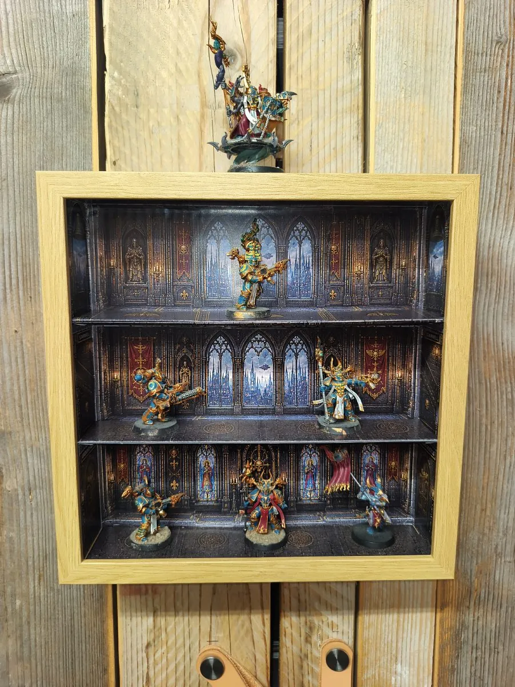
SANNAHED 25 × 25 cmBUILD
Print · Cut · Fold · GlueDISPLAY
Desk, shelf or wallDOWNLOAD
Digital PDF on Etsy
A Warhammer Showcase Display for Your Collection
I wanted to give my miniatures a setting of their own. Arches, stained-glass imagery and stone textures turn this small display diorama into a Gothic cathedral, with matching artwork for the background, sides and shelves. The photographs show it filled with painted Warhammer miniatures, but the setting can also suit other fantasy and tabletop miniatures.
I made the two raised shelves from leftover cardboard, approximately 3 mm thick. Together with the bottom of the frame, they create three display levels. The printed coverings help the shelves blend into the Gothic architecture, so the whole miniature display feels like one 3D shadow box scene. Below, I’ll take you through the build shown in my photos.
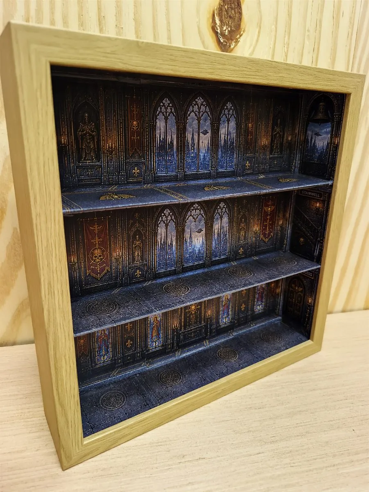
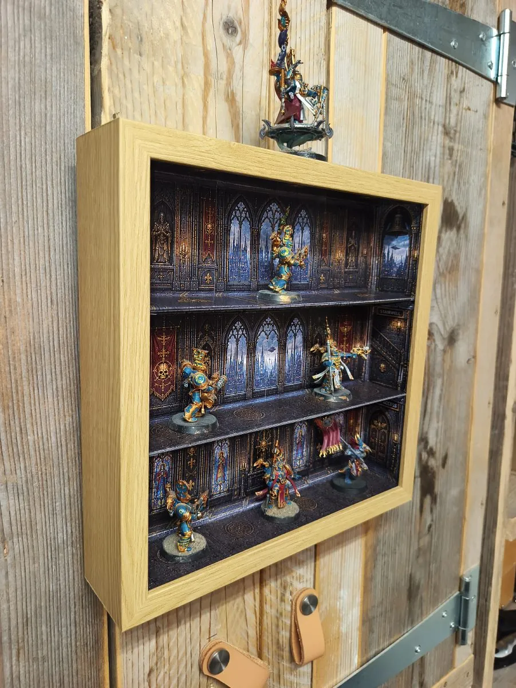
Warhammer Figure Storage That Puts Your Collection on Display
If you’re looking for Warhammer miniature storage for a few favourite painted models, this project gives them a place on show. The cathedral keeps a small group together on a shelf, desk or wall, where you can enjoy the collection between games or painting sessions. It is a home display rather than a carrying solution for taking an army to a game. For a small 40K collection, or some other figures with a maximum height of 2.76 inches (7 cm), check base sizes and projecting details before choosing the models to display.
For me, the backdrop is part of the appeal: it makes the shelves feel like a place the characters belong. Even if you do not want to build this particular IKEA hack, you can borrow the idea of matching a miniature background to the figures you collect.
Planning Your Warhammer Display Shelves: Figure Height and Base Size
Choose the figures before you assemble the shelves. Allow for their bases, raised weapons, wings and any other projecting details. So... This display is made to accommodate 3 layers of figures up to approximately 7 cm (2.75 inches) tall, depending on their position and base, but height alone does not tell you whether a model will fit. Check the usable shelf depth and width too.
IKEA SANNAHED Hack: Build Your Own Miniature Display Shelves
This project is designed for the IKEA SANNAHED 25 × 25 cm frame (approximately 9¾ × 9¾ inches). The frame and figures are purchased separately.
The PDF supplies the artwork. For this build, I made the shelves from cardboard I already had lying around, approximately 3 mm thick.
- The Gothic Cathedral printable PDF: A4 or US Letter
- IKEA SANNAHED 25 × 25 cm frame
- Printer and paper or cardstock
- Cardboard approximately 3 mm thick for the shelves
- Scissors or a craft knife and cutting mat
- Ruler and pencil
- A glue stick for the large paper surfaces to help prevent wrinkling
- Liquid glue for a stronger bond on the shelves and their supports
- Your miniature collection
Print and Prepare Your Gothic Diorama Artwork
Start with the printable artwork and your SANNAHED frame. Identify the background sections, side panels and shelf pieces before cutting. Keep the pieces grouped so you can see which surfaces belong together.
Print at actual size (100%), then check a piece against the frame before cutting the full set.
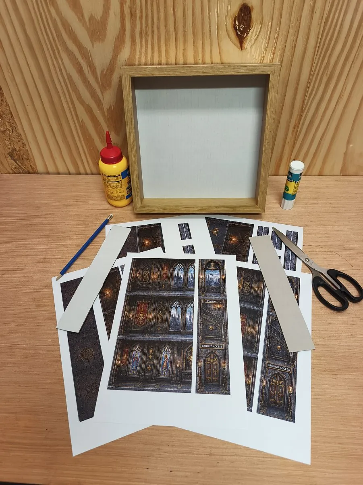
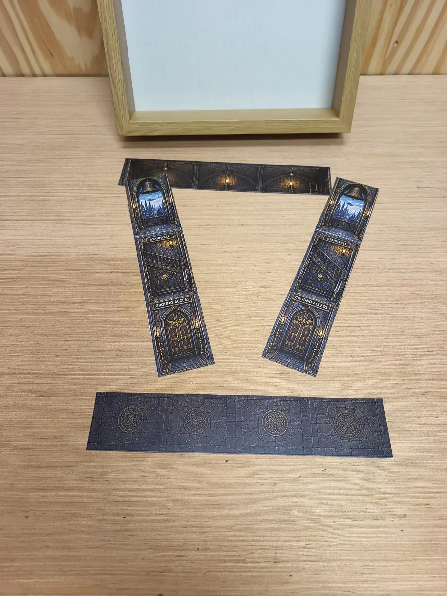
Line the inside of the frame
Important! Test-fit the printed side panels and bottom piece inside the frame. Check their orientation before gluing: the architectural details should run upright, and the floor should face upwards. Work a section at a time and smooth each piece into position.
Dry-fit first. Small adjustments are easier before the glue goes on. Did you cut it too short? No problem, I simply color the uncovered part of the frame with a dark marker. And small adjustments are easier before the glue goes on!
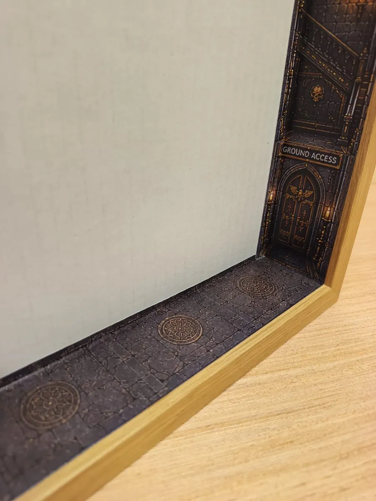
Build a Gothic Diorama Background for Fantasy Miniatures
Arrange the background sections in order before fixing them in place. Follow the repeating arches and horizontal architectural lines to align the pieces. Check how the background meets the side walls at both corners.
Look at the scene from the front as well as from above before committing to the final position. The middle sections of the pages should line up in a straight vertical line, but that’s hard to cut with scissors, so I added extra pieces of background that go in the middle. They will cover any overlaps or gaps where you’ve cut a little too short.
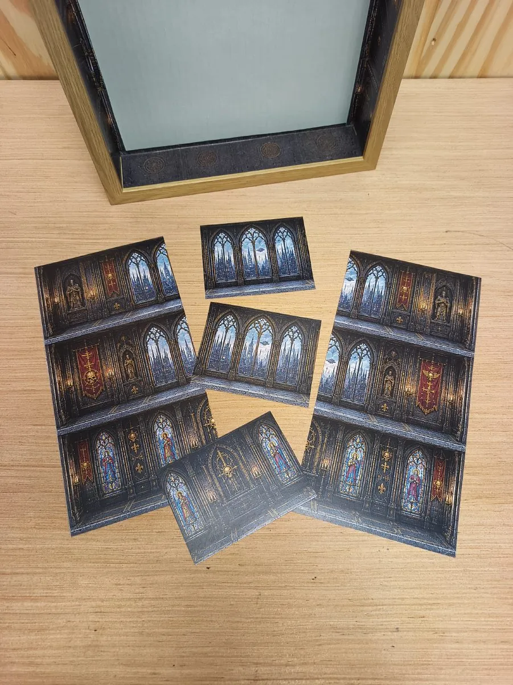
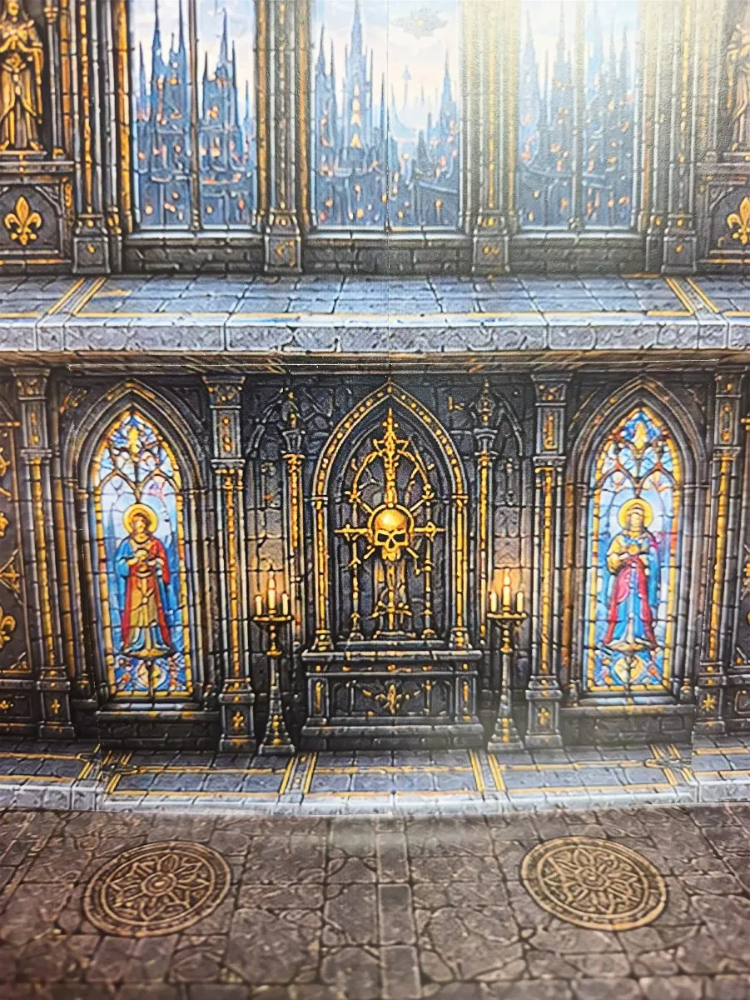
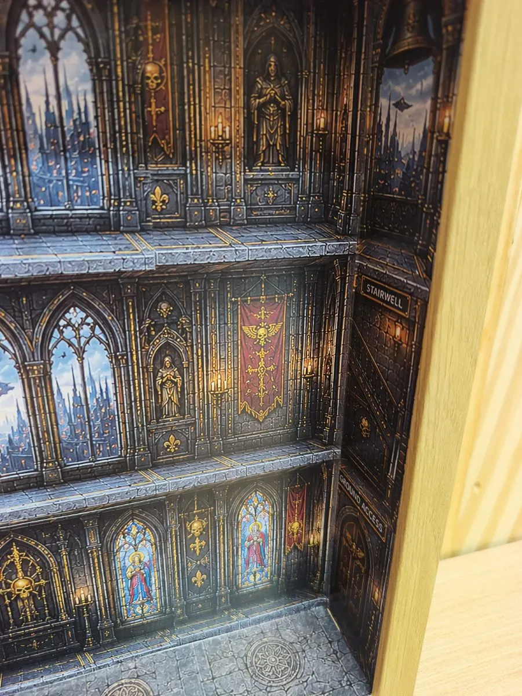
Make the Cardboard Shelves for Your Warhammer Display
I used cardboard I already had lying around, approximately 3 mm thick, to make the two raised shelves. Cut the cardboard to fit inside your frame, checking the fit before gluing. Cut out the matching printed shelf coverings and wrap them around the cardboard so the visible upper and lower surfaces are finished.
Allow for the thickness of the covering when checking the fit.
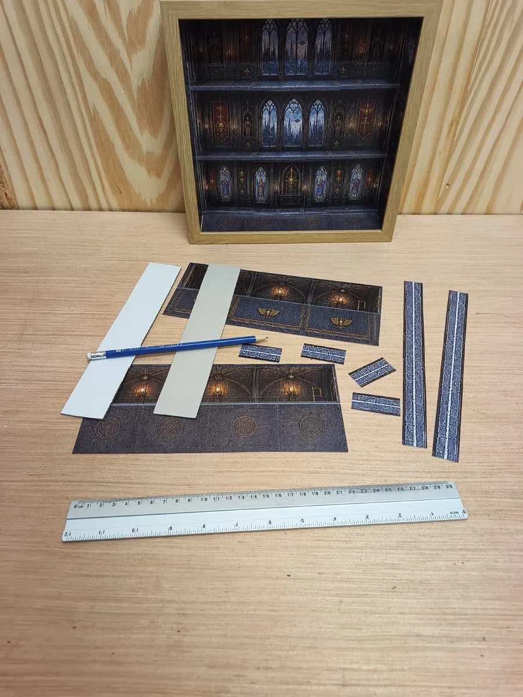
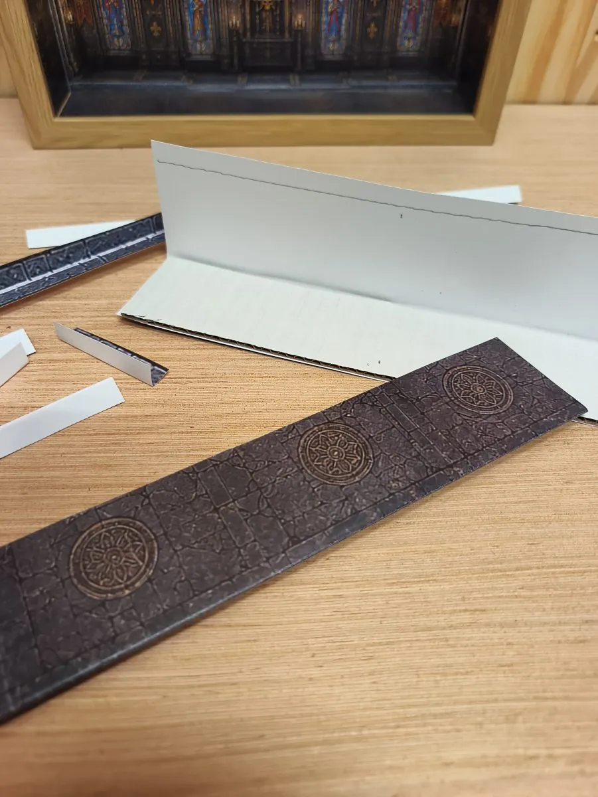
Fit the shelf supports
The shelves rest on folded strips attached to the inside of the frame. Most strips are a little longer and wider than needed, so it’s best to test-fit and trim them before applying the glue. Fold each support strip in half lengthwise: glue one half against the inside of the frame and fold the other half outwards to form a small ledge. These ledges carry the cardboard shelves. Check that the supports on opposite sides are at the same height, then test-fit a shelf to make sure it sits level.
On the background and side panels, you can see the different levels separated by a printed “floor.” The support strips have the same colors as the floor, so they blend right in. If you glue them a little higher or lower, it won’t show.
Check the height of your intended miniatures, including their bases and raised weapons. A spear or something similar can stick out at the front for an extra 3D effect!
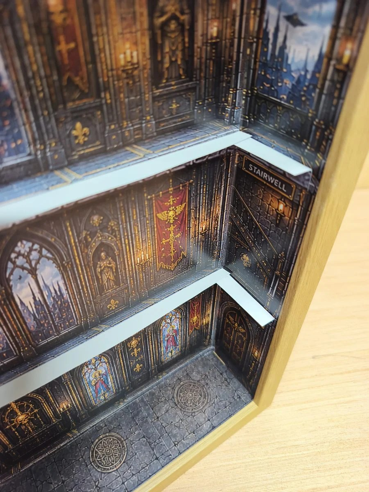
Install and finish the shelves
Once the glued support strips are secure, place the covered cardboard shelves on the folded-out ledges. Check that they fit properly. Check the corners and trim carefully where needed. If a small area is left uncovered, simply touch it up with a dark marker. Use liquid glue to attach the shelves to the support strips for a stronger bond. Using a glue stick could damage the strips now that they’re attached to the back wall. Let the adhesive set fully before placing miniatures inside.
A finished front edge helps the shelves blend into the architecture.
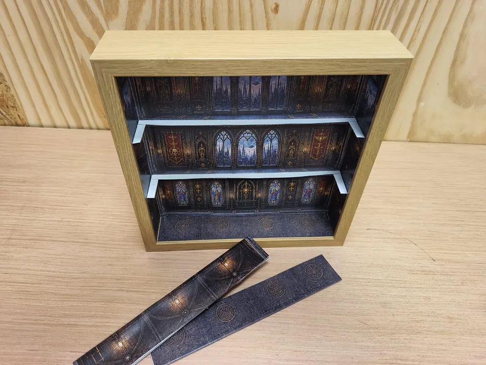
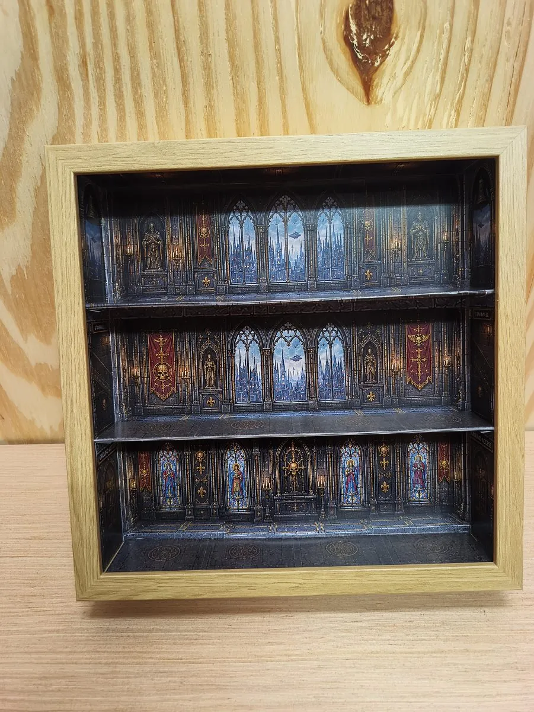
Arrange Your Miniatures in the Cathedral Display
The completed frame has three display levels. Try a few arrangements before filling every space: a single character can stand beneath an arch, while a small group can share another level. The empty display also makes the cathedral details easy to see.
Check base depth as well as figure height. A tall model may fit while a wide base does not. The IKEA SANNAHED frame has a raised lip of approximately 5 mm (0.2 inches) along the inside edge.
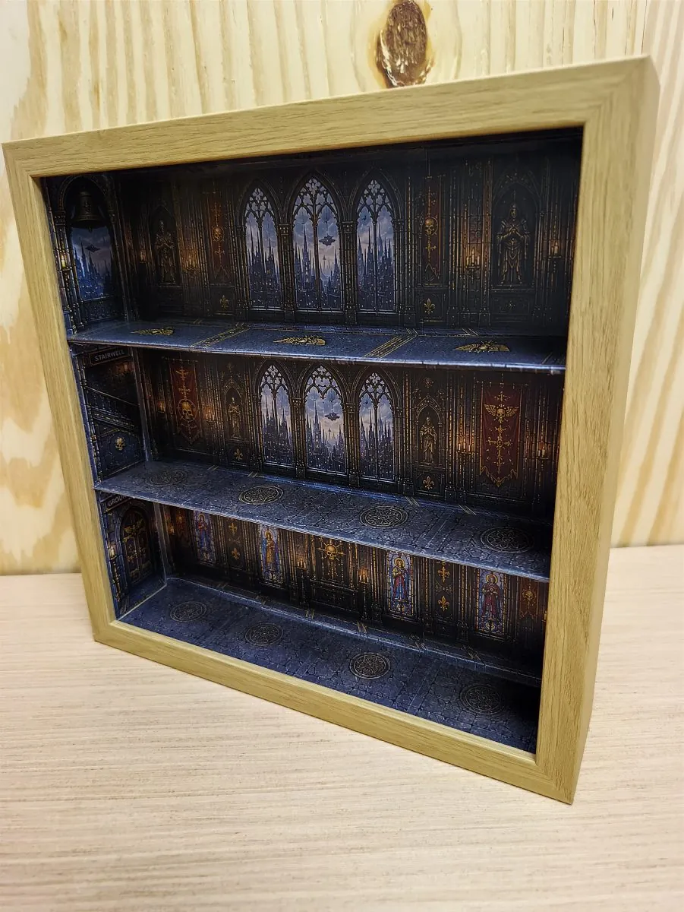
Turn Your Collection into a Fantasy Figure Wall Display
Place the finished display on a stable desk or shelf, or hang it using suitable fixings for the frame, wall and total weight. The photographs show the cathedral filled with painted Warhammer miniatures, without any extra props. It’s fun to add even more depth with a few miniature props, homemade or bought from a shop... But try leaving a little space around individual characters so their poses and painted details remain visible. You can group models across the three levels or give a favourite figure an arch of its own.
Keep models securely positioned and check the finished assembly before hanging it.
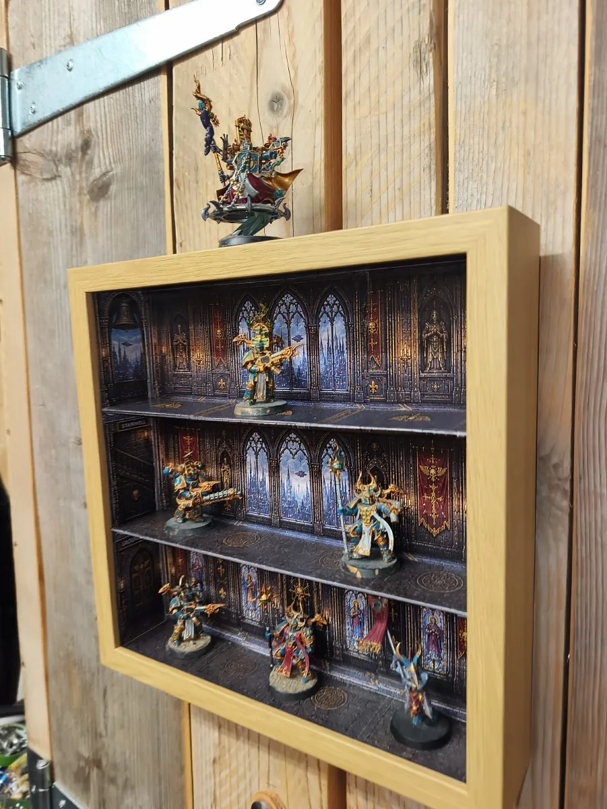
Watch the Gothic Miniature Display on Video
Watch the landscape video here, then use the numbered photo steps above as you build. There is also a slightly different Short below.
Watch the landscape video on YouTube ↗
A slightly different look: watch the Short
Questions About the DIY Miniature Display
Is this a physical kit?
No. The Etsy product is a digital download with A4 and US Letter PDFs. No frame, printed parts or miniatures are shipped.
Will it fit the 35 × 35 cm SANNAHED?
This design is sized for the 25 × 25 cm frame. It is not supplied as a ready-to-fit design for the larger frame.
How are the cardboard display shelves supported?
Folded strips glued inside the frame form the supports. One half of each strip attaches to the inside of the frame; the other half folds out to create a ledge beneath the shelf. Let the glue set and check that the shelves sit level before adding figures.
How tall can the miniatures be?
The product is intended for figures up to approximately 7 cm (2.75 inches), depending on their position and base. Check the finished space against your own models, including weapons and other projecting details.
Can I use this as a Warhammer 40K display?
Yes, if your chosen miniatures and their bases fit the available space. If you are looking for a 40K background for a small group of figures, the cathedral artwork offers a Gothic setting. Check each model individually, especially those with wide bases or tall details. This is an independent printable display design.
Is this a Warhammer display board or a display case?
This project creates shelves inside a picture frame. It is intended to display a small collection at home. If you are looking for a Warhammer display board to carry a whole army, check the size and intended use carefully: these cardboard shelves are not designed for that job. An enclosed 40K display case is also a different option if dust protection is your priority; do not assume the frame glazing will fit in front of your chosen models.
Can I use ordinary printer paper?
Yes. I used cardboard approximately 3 mm thick as the shelf structure and covered it with the printed artwork. Ordinary printer paper can be used for the coverings.
Are the miniatures included?
No. The painted figures in the photos demonstrate the finished display. You add your own collection.
Can I share the printable files?
The printable design is for personal use only. Please direct others to the product listing for their own copy.
More Miniature Display Dioramas for Your Shelf or Desk
This cathedral might become the start of a series. I’m considering smaller freestanding display dioramas with a back wall, one side wall and a floor, so you could give a few miniatures a setting without building a whole frame display. Left and right versions could sit together to form a larger scene. These are ideas I’m exploring; this Gothic Cathedral is the printable project available now.
Build Your Own Gothic Cathedral Miniature Display
The Gothic Cathedral PDF includes the background, side panels, shelf coverings and decorative architectural elements in A4 and US Letter formats. Print the artwork, use your own cardboard for the shelves and follow the photo guide to build your display.
Get the printable PDF on Etsy ↗Digital product · Frame and miniatures not included · Personal use only